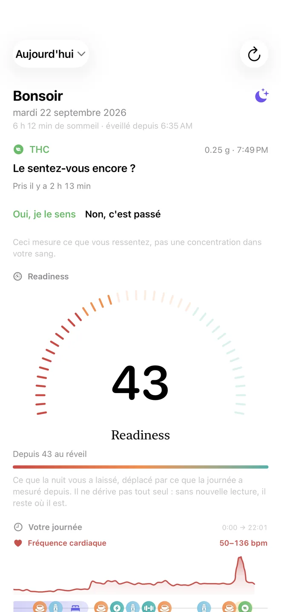
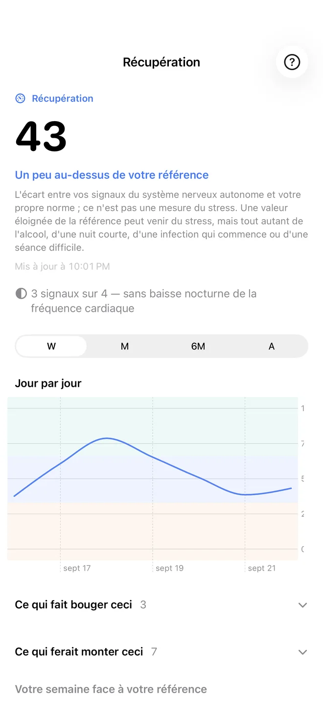
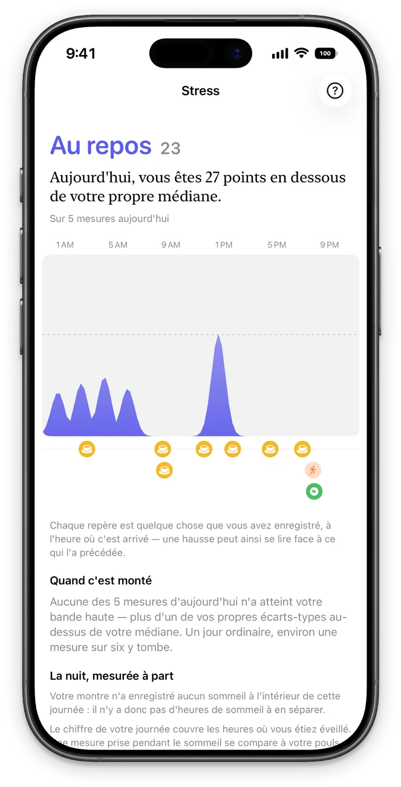
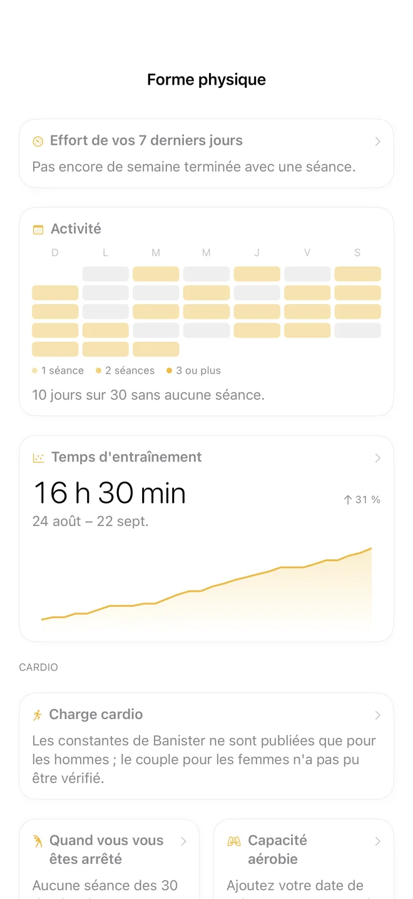
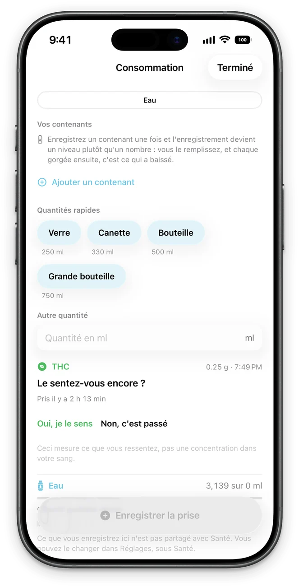
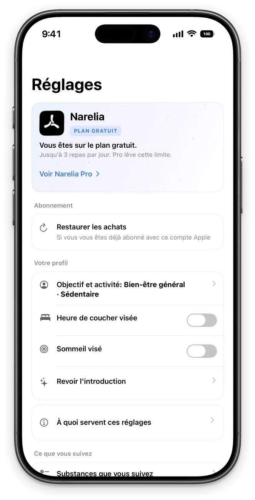

Vos données, comparées à vous.
Narelia lit votre Apple Watch et vous compare à vous-même : vos nuits, vos semaines, votre plage habituelle. Pas à une table de population, et sans prétendre savoir ce qu’elle ne sait pas.
Gratuite pendant la bêta. Sans compte. iPhone sous iOS 26 ; Apple Watch recommandée.

Chaque chiffre montre le calcul qui l’a produit.
Pas de score opaque. Chaque écran montre de quoi son chiffre est fait et à quels jours il est comparé.
-
Vos chiffres face à votre propre histoire
-
Chaque chiffre avec son calcul

-
Ce que votre montre mesure pendant votre sommeil

-
Votre effort face à vos propres semaines

-
Eau, caféine, créatine, protéines et repas

-
Sans compte, sans serveur

Principes
Des données, pas des verdicts
Elle écrit « 47 minutes de moins que votre médiane », pas « votre récupération est mauvaise ». L’app fait le calcul ; l’interprétation vous appartient.
Honnête pendant qu’elle apprend
Une référence a besoin d’historique. Tant que la vôtre se forme, l’écran compte les nuits acquises et celles qui manquent, au lieu d’afficher un chiffre qui ne veut encore rien dire.
Vos jours, face à face
Notez eau, caféine, THC ou créatine, et elle met côte à côte vos jours avec et sans. Quand elle trouve une différence, elle vous montre les deux groupes de jours et la part qui peut relever du hasard.
Elle connaît ses limites
Un écran silencieux ne prouve pas qu’il n’y a rien. Quand les données ne suffisent pas à conclure, Narelia le dit, chiffre à l’appui, au lieu de combler le vide.
Au-delà de l’app.
Readiness, fréquence cardiaque heure par heure, stress, sommeil, constantes, eau et activité, sur l’écran d’accueil, l’écran verrouillé et l’Apple Watch. Quatre styles au choix : Narelia, Nuit, Éditorial et Classique.


Sans compte. Sans serveur.
Toute l’analyse se fait sur votre iPhone. Les photos de vos repas sont lues par le modèle d’Apple, sur le téléphone même ; elles ne partent nulle part.
Vos données restent sur votre iPhone et dans l’app Santé. La copie iCloud est facultative, va sur votre propre compte, et reste désactivée tant que vous ne l’activez pas.
Pas d’analytique ni d’identifiants publicitaires. La personne qui fait l’app n’a aucune copie de vos données.
Découvrez-la avec vos propres données.
Rejoindre la bêta sur TestFlightElle s’installe via l’app TestFlight d’Apple. Les références commencent à se former dès vos premières nuits avec la montre.